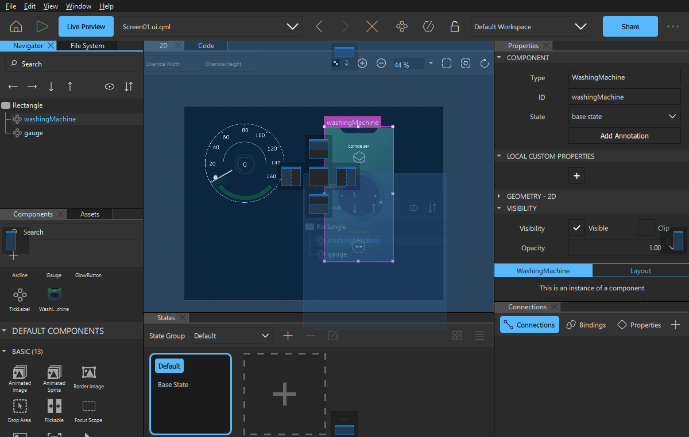
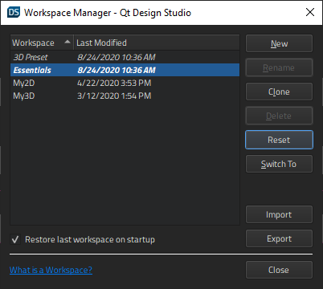
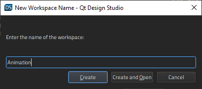

Managing Workspaces
In the Design mode, you can arrange a set of Qt Design Studio views as a workspace on the screen.
To detach views:
- Toggle
 to
to  at the top toolbar.
at the top toolbar. - Double-click the title bar of the view.
- Start dragging the view to another position.
You can move detached views or groups of views anywhere on the screen.
To attach views, drag them over the dock area markers until the dock area where you want to attach the view is highlighted, and then drop them into the dock area.

To close groups of views, select the Close Group button.
To open closed views, select View > Views.
Note: To lock all views, toggle to at the top toolbar.
Saving Workspaces
The changes you make to a workspace are saved when you exit Qt Design Studio. Select View > Workspaces > Manage > Restore last workspace on startup to restore the current workspace the next time you start Qt Design Studio.

To save a workspace under a new name, select Clone.
To revert the changes you made to a preset workspace, select Reset.
To switch between workspaces, select Switch To.
To save a workspace after you've moved views around or opened and closed them:
- Select New.

- In the Enter the name of the workspace field, enter a name for the workspace.
- Select Create to create a new empty workspace or Create and Open to create a workspace and to switch to it.
To delete the selected workspace, select Delete in Workspace Manager.
To export workspace settings into .wrk files select Export. To import them to another computer, select Import, and then locate the workspace settings file.